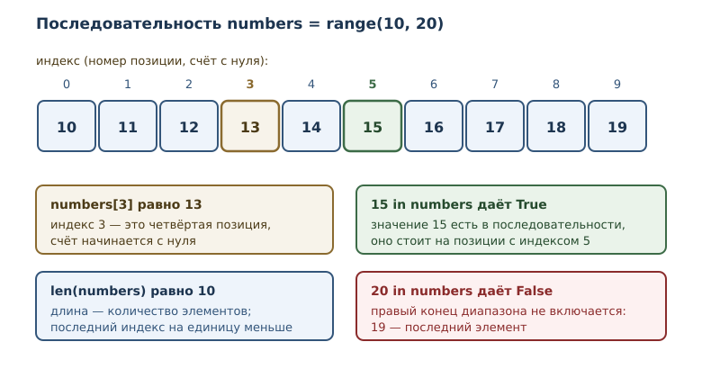
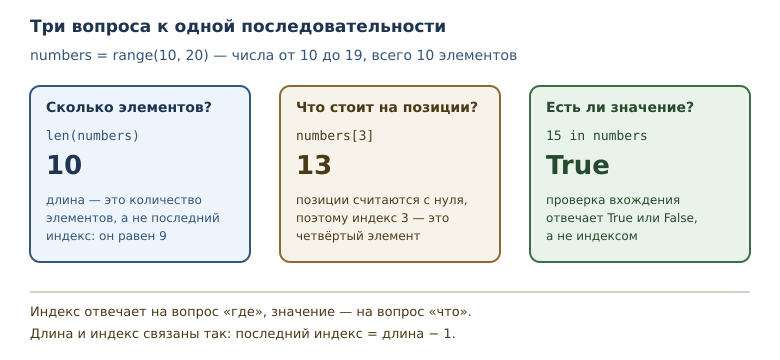

Коллекции и последовательности: введение
Зачем нужны коллекции, что такое последовательность, элемент, позиция и длина.
В этой главе
До сих пор каждое имя в программе связывалось с одним значением: одно число, один текст, один результат. Так удобно описывать отдельный факт, но не набор фактов. Температура за десять дней, оценки за контрольную, символы в слове — это не одно значение, а группа связанных значений, которую нужно хранить вместе и обрабатывать целиком. С этого места начинается третья часть книги: работа с наборами данных.
12.1 Зачем нужны коллекции
Представьте, что нужно посчитать среднюю температуру за десять дней. Можно завести десять имён:
t1 = 18
t2 = 21
t3 = 19
t4 = 20
Четыре имени ещё терпимы. Десять — уже неудобно, тысяча — невозможно: программа не может обработать то, чего не знает по имени. Кроме того, такой код не масштабируется: количество данных задано в тексте программы, а не во входных данных.
Коллекция — объект, хранящий набор других объектов. Коллекция позволяет обращаться с группой значений как с одной сущностью: передать в функцию, посчитать количество элементов, пройти по ним в цикле.
Элемент — отдельное значение внутри коллекции. В коллекции температур элементами будут числа 18, 21, 19, 20; сама коллекция — один объект, содержащий четыре элемента.
Из этого сразу следует важное свойство: коллекция — тоже объект, у неё есть тип и идентичность, как у любого значения. Поэтому коллекции можно связывать с именами, передавать в функции и возвращать из них. Элементы при этом остаются обычными значениями своих типов.
Конкретные виды коллекций появятся в следующих главах: списки в тринадцатой, кортежи в четырнадцатой, строки как последовательности в пятнадцатой, множества в шестнадцатой и словари в семнадцатой. Начинать нужно с общих понятий, которые работают для всех них.
Польза коллекции видна, когда данных становится много. Программа, которая хранит десять температур в десяти именах, требует правки при переходе к сотне измерений: нужно дописывать код. Программа, которая хранит коллекцию температур, обрабатывает любое количество одинаково — цикл проходит по элементам, а их число определяется данными, а не текстом программы. Это и есть переход от «нескольких значений» к «набору данных».
12.2 Коллекция и последовательность
Не всякая коллекция устроена одинаково. Самая привычная разновидность — та, в которой элементы стоят в определённом порядке и к каждому можно обратиться по номеру.
Последовательность — коллекция с определённым порядком элементов, доступных по целочисленному индексу. У последовательности есть первый элемент, второй, третий; порядок задан самой коллекцией и не меняется произвольно между операциями.
С последовательностью вы уже работали, не зная об этом: объект range
из главы о циклах — настоящая последовательность. Он задаёт
последовательность целых чисел, и к его элементам можно обращаться по
индексу.
numbers = range(10, 20)
print(len(numbers))
print(len(range(2, 10, 3)))
print(len(range(5, 5)))
10
3
0
Длина — количество элементов в коллекции, возвращаемое функцией
len. У range(10, 20) десять элементов: числа от 10 до 19. Второй
пример показывает, что длина зависит от шага: range(2, 10, 3) даёт
2, 5, 8 — три элемента. Третий пример важен как граничный: диапазон
range(5, 5) пуст, его длина равна нулю.
len работает не с любым объектом, а только с теми, у которых есть
длина. Для числа её не существует.
print(len(42))
TypeError: object of type 'int' has no len()
Сообщение говорит буквально: у объекта типа int нет длины. Длина —
свойство коллекции, а не отдельного значения. У пустой коллекции длина
равна нулю, и это не ошибка.
12.3 Элемент и позиция
Место элемента в последовательности называется позицией. Позиции нумеруются, и номер позиции — это индекс: целое число, указывающее позицию элемента в последовательности. Нумерация начинается с нуля.
Почему с нуля, а не с единицы? Индекс удобно понимать как смещение от
начала: первый элемент стоит на нулевом расстоянии от начала, второй — на
расстоянии один. Такая нумерация делает арифметику индексов простой:
последний индекс последовательности длины n равен n - 1.

Обращение к элементу записывается квадратными скобками.
numbers = range(10, 20)
print(numbers[0])
print(numbers[3])
print(numbers[9])
10
13
19
numbers[0] — первый элемент, numbers[3] — четвёртый, numbers[9] —
последний. Между индексом и позицией полезно держать в голове
соответствие: индекс 0 — первая позиция, индекс 3 — четвёртая позиция.
Если индекс выходит за пределы допустимого диапазона, обращение завершается ошибкой: элементов с такими номерами нет.
numbers = range(10, 20)
print(numbers[10])
IndexError: range object index out of range
Диапазон допустимых индексов — от 0 до len(numbers) - 1. Тип этой
ошибки и её типичные причины разобраны в главе о списках; здесь важно
запомнить само правило границы. Ошибка на единицу, когда берут
numbers[len(numbers)], — один из самых частых дефектов начинающих.
12.4 Индекс и значение — разные вещи
Индекс и элемент легко перепутать, потому что оба выглядят как числа.
Различие принципиально: индекс отвечает на вопрос «где», элемент — на
вопрос «что». В range(10, 20) значение первого элемента равно 10, а его
индекс равен 0.
numbers = range(10, 14)
print("длина:", len(numbers))
for position in range(len(numbers)):
print(position, "->", numbers[position])
длина: 4
0 -> 10
1 -> 11
2 -> 12
3 -> 13
Такой цикл — стандартный способ пройти по последовательности, когда нужны
и значения, и их позиции. Выражение range(len(numbers)) даёт индексы
0, 1, 2, 3, а numbers[position] — значение на этой позиции. Обратите
внимание: range(len(numbers)) не включает len(numbers), иначе
последний шаг вышел бы за границу.
12.5 Проверка вхождения
Часто нужно узнать не «что стоит на позиции», а «есть ли такое значение
вообще». Для этого есть проверка вхождения — оператор in и его
отрицание not in. Результат — логическое значение True или False.
digits = range(10)
print(7 in digits)
print(10 in digits)
print(10 not in digits)
print(0 in digits)
True
False
True
True
range(10) содержит числа 0–9. Поэтому 7 входит, 10 не входит, а 10 not in digits даёт True. Ноль входит: он первый элемент, а не «ничего».
Что именно проверяет in? Он отвечает на вопрос, есть ли в коллекции
элемент, равный искомому значению. Сравнение идёт по значению, а не по
позиции и не по «похожести типа»: 0 in range(10) истинно, потому что
ноль действительно стоит в начале, а 0.0 in range(10) тоже истинно —
целое число и число с плавающей точкой с одинаковым значением Python
считает равными при сравнении. Это следствие общего правила сравнения,
а не особенность проверки вхождения.
Последовательность может содержать повторяющиеся элементы. Проверка вхождения при этом отвечает просто «да», не уточняя, сколько раз значение встречается и на какой позиции. Если нужны подробности — номер позиции или количество, — их получают другими средствами, о которых пойдёт речь в следующих главах.
Проверка вхождения учитывает границы последовательности, а не диапазон чисел вообще.
print(10 in range(1, 10))
print(9 in range(1, 10))
print(len(range(1, 10)))
False
True
9
Правый конец range не включается: range(1, 10) содержит 1–9. Поэтому
10 не входит, хотя граница указана в записи. Здесь работает то же правило
полуоткрытого интервала, что и в циклах.
Вхождение определено только для коллекций. Попытка проверить вхождение в число — ошибка типа.
print(3 in 42)
TypeError: argument of type 'int' is not a container or iterable
Сообщение подсказывает: int не контейнер и не итерируемый объект. Для
оператора in нужен объект, у которого можно проверить наличие
элемента. Подробнее про итерируемые объекты — в следующем разделе и в
главе об итераторах.
12.6 Итерируемость
Последовательность можно не только индексировать, но и перебирать:
for проходит по элементам по порядку. Способность объекта отдавать
элементы по одному называется итерируемостью, а сам объект —
итерируемым. Это понятие вы уже встречали в главе о циклах; здесь оно
впервые применяется к коллекциям как к источнику данных.
total = 0
for number in range(1, 6):
total += number
print("сумма:", total)
сумма: 15
Цикл for number in range(1, 6) по очереди связывает имя number с
элементами 1, 2, 3, 4, 5. Порядок обхода — тот же, что порядок элементов
в последовательности. Именно порядок делает сумму предсказуемой.
У последовательности есть два способа доступа к элементам: по индексу и через перебор. Первый нужен, когда важна позиция, второй — когда нужны значения. Оба способа согласованы: перебор идёт в том же порядке, в котором элементы стоят по индексам.
Не всякая коллекция обязана быть последовательностью: бывают коллекции без порядка, где индексов нет, но перебор есть. Такие типы появятся в главах о множествах и словарях. Поэтому правило звучит так: последовательность всегда итерируема, но итерируемый объект не всегда последовательность.
12.7 Коллекции бывают разными
У коллекций есть свойства, которые полезно различать ещё до знакомства с конкретными типами.
Первое — порядок. У последовательности он есть и фиксирован. Коллекция без порядка хранит элементы так, что «первого» среди них нет; перебор возможен, а индекс — нет.
Второе — изменяемость. Одни коллекции можно менять после создания (добавлять и удалять элементы), другие создаются один раз и дальше ведут себя как значения. Неизменяемую коллекцию безопасно передавать в функции: вызывающий код не сможет её испортить.
Третье — уникальность. Одни коллекции допускают повторы, другие хранят каждый элемент не более одного раза.

Конкретные сочетания этих свойств и дают четыре основных вида коллекций, которые ждут впереди. Пока достаточно запомнить три вопроса, на которые умеет отвечать любая последовательность: какова её длина, что стоит на позиции и входит ли значение.
12.8 Типичные ошибки
Путать длину и последний индекс. Если длина равна 10, последний
индекс равен 9. Обращение numbers[len(numbers)] всегда выходит за
границу.
Путать индекс и значение. В range(10, 20) значение 10 стоит на
позиции 0. Если нужен элемент с конкретным значением, его ищут проверкой
вхождения или перебором, а не обращением по индексу.
Считать, что правый конец диапазона входит. range(1, 10) содержит
девять чисел, а не десять. То же правило действует для проверки
вхождения.
Проверять вхождение в число. 3 in 42 — ошибка типа: число не
коллекция. Проверка вхождения имеет смысл только для объектов, которые
содержат элементы.
Ожидать индексацию от любой коллекции. У коллекции без порядка
индексов нет. Прежде чем писать collection[0], убедитесь, что это
последовательность.
Считать len универсальным. len определена для коллекций, но не
для всех объектов. Для числа или логического значения её нет.
12.9 Упражнения
1. Длина и последний индекс
Для последовательности numbers = range(3, 13) определите, не запуская
код: длину, последний допустимый индекс и значение элемента с индексом
5. Затем проверьте ответы программой.
2. Прогнозирование вывода
Что выведет программа? Запишите ответ, затем проверьте.
temperatures = range(18, 24)
print(len(temperatures))
print(temperatures[2])
print(21 in temperatures)
print(30 in temperatures)
3. Граница диапазона
Напишите цикл, который печатает все элементы range(4, 9) вместе с
индексами, а затем отдельной строкой сообщает, что индекс 5 выходит за
границу. Объясните, почему граница равна именно 5.
4. Функция доступа по индексу
Напишите функцию nth(sequence, position), которая возвращает элемент
последовательности на заданной позиции. Проверьте её на
range(100, 105) с позициями 0 и 4.
5. Проверка вхождения
Напишите функцию contains(sequence, value), которая возвращает
True, если значение входит в последовательность, и False иначе.
Проверьте её на range(1, 10) со значениями 5, 10 и 1.
6. Пустая последовательность
Создайте пустую последовательность range(7, 7) и выведите её длину и
результат проверки 7 in empty. Объясните, почему проверка вхождения не
поднимает ошибку.
7. Анализ вхождения
Объясните, почему 10 in range(1, 10) даёт False, а 9 in range(1, 10)
даёт True. Как длина этой последовательности связана с ответом?
8. Сумма с шагом
Просуммируйте элементы range(2, 12, 2) циклом. Сколько элементов в
этой последовательности и чему равна сумма? Проверьте оба ответа
программой.
9. Тип ошибки
Что произойдёт при выполнении len(3.5)? Назовите тип исключения и
объясните, почему функция len не определена для числа.
10. Мини-задача: кратные числа
Напишите функцию count_multiples(limit, divisor), которая считает,
сколько чисел в последовательности range(1, limit + 1) делится на
divisor без остатка. Используйте цикл и проверку условия. Проверьте на
парах (20, 3) и (10, 5).
12.10 Проверка понимания
- Чем коллекция отличается от отдельного значения? Приведите пример задачи, где коллекция необходима.
- Что такое последовательность и чем она отличается от коллекции вообще?
- Почему нумерация индексов начинается с нуля? Как связаны длина и последний индекс?
- Чем индекс отличается от значения элемента? Покажите на примере
range(10, 20). - Что проверяет оператор
inи почему3 in 42— ошибка? - Что значит «итерируемость» и почему последовательность всегда итерируема?
- По каким трём свойствам различаются коллекции?
12.11 Что дальше
Общие понятия введены: коллекция, последовательность, элемент, индекс, длина и проверка вхождения. Теперь можно перейти к самой используемой последовательности Python — списку. Он изменяемый, поэтому кроме чтения элементов понадобится освоить изменение, удаление и срезы. Об этом — в главе «Списки: индексы, срезы и методы».